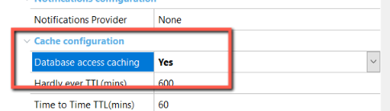

GeneXus MSBuild Tasks let you automate all about Knowledge Base building (i.e., automating import, specification, generation and compilation tasks among others). In a declarative way (creating and programming scripts in XML format) you can easily specify the tasks to be done later with no user interaction.
This technology helps you create night builds of the applications you are developing, running automatic tests on them, etc.
GeneXus MSBuild Tasks are based on the Microsoft Build Engine (MSBuild). It is the new build platform for Microsoft and Visual Studio. It is a generic, extensible build platform and is part of Framework 2.0 (meaning it is free).
The following is a simple script intended for opening an existing Knowledge Base and building all its objects.
<Project DefaultTargets="OpenAndBuildAll" xmlns="http://schemas.microsoft.com/developer/msbuild/2003">
<Import Project="C:\Program Files\Artech\GeneXus\GeneXusX\Genexus.Tasks.targets" />
<Target Name="OpenAndBuildAll">
<OpenKnowledgeBase Directory="C:\MyKnowledgeBases\TestKnowledgeBase" />
<BuildAll />
</Target>
</Project>
The Import directive (second script line) tells MSBuild where to find extensions specific to GeneXus; this is a required directive. Lines 3 thru 6 identify a "Target" (something to be built) and specify what actions or "Tasks" must be accomplished to complete it. In this case, the tasks are OpenKnowledgeBase and BuildAll.
As you may have noticed, MSBuild coding is simple but powerful. You can take a closer look at all its features here).
The following task list describes all GeneXus MSBuild tasks (provided in GeneXus.MSBuild.Tasks.dll) and their parameters.
Creates a Knowledge Base in the specified directory based on a KB template.
Syntax
<CreateKnowledgeBase Directory="kbDirectory" Template="kbTemplate" | BulkCopyFile="fileNameWithBCPformat" TemplatesPath="alternateTemplatesPath" Overwrite="true|false" IntegratedSecurity="true|false" UserId="userId" Password="password" CreateDbInKbFolder="true|false" ServerInstance="instance" DBName="dbName" Language="language" />
Options
Directory is the directory (absolute or relative) where the Knowledge Base should be created. REQUIRED
Template is the name of a Knowledge Base template.
They are exported with GeneXus, and there are two of them:
You can specify this parameter or the BulkCopyFile parameter. The last alternative is to omit both parameters and define the Default Template in the genexus.exe.config file through the "DefaultEnvironmentForCreate" entry:
<add key="DefaultEnvironmentForCreate" value=".NET Environment"/>
<add key="DefaultEnvironmentForCreate" value="Java Environment"/>
The value that you have to specify is the Environment name (as it is shown in the 'Create Knowledge Base' dialog).
BulkCopyFile: Name of a file with BCP format to be able to create the KB from it.
TemplatesPath specifies the directory from which to obtain the template files. Said directory must contain the following folders from any GeneXus installation:
Overwrite is true or false (default value) to delete the folder before creating the KB.
IntegratedSecurity: "true" to use trusted connection; "false" to use specific user Id and password. Default: true.
UserId: the user's name to use when IntegratedSecurity is set to false.
Password: password to use when IntegratedSecurity is set to false.
CreateDbInKbFolder: "true" to create KB database files in the Knowledge Base folder; "false" to use the DBMS' default data folder. Default: true.
ServerInstance: server name and the instance of the SQL Server, for example: ".\SQLEXPRESS" or "localhost". If you don't use this property, the local default instance will be used.
DBName: name of the KB database. The default is the KB name prefixed with "GX_KB_".
Language: the language of the Knowledge Base to create.
Samples
Create a CSharp Knowledge Base in directory C:\MyKnowledgeBases.
<CreateKnowledgeBase Directory="C:\MyKnowledgeBases" Template="CSharp.KBTemplate" />
Generates the needed file to recreate the Knowledge Base (BCP format).
Syntax
<BulkCopyKnowledgeBase FullKB="true|false" Outputfile="outputfile" />
Options
FullKB: "true" to generate the information for each version of the KB; 'false' generate the information only for the active version. REQUIRED
OutputFile: name of the .zip file that will contain the extracted information; if a value is not specified, this file is generated in the same directory of the KB with the same name.
Basically the BulkCopyKnowledgeBase task is used to generate a BCP (the format used by GeneXus Server to send a KB or checkout), file with all the information of the current KB. It can be used to save a backup of said KB.
Samples
1. Define the createBackup.msbuild file with the following content:
<Project DefaultTargets="RunTests" xmlns="http://schemas.microsoft.com/developer/msbuild/2003">
<Import Project="$(GXInstall)\genexus.tasks.targets"/>
<Target Name="CreateBackupAndRestore">
<PropertyGroup>
<BackupFilename>KB_$([System.DateTime]::Now.ToString('yyyyMMddhhmmss')).bcp</BackupFilename>
<BackupPath>$([System.IO.Path]::Combine('$(KBDir)', '$(BackupFilename)'))</BackupPath>
</PropertyGroup>
<!-- Create a backup of the KB located at $(KBDir) -->
<OpenKnowledgeBase Directory="$(KBDir)"/>
<BulkcopyKnowledgeBase FullKB="false" OutputFile="$(BackupPath)"/>
<CloseKnowledgeBase/>
<!-- Create a new KB from the BCP file in a sibling directory -->
<CreateKnowledgeBase Directory="$(KBDir)_restore" BulkCopyFile="$(BackupPath)"/>
<CloseKnowledgeBase/>
</Target>
</Project>
2. Run by command line:
c:\>msbuild createBackup.msbuild /t:CreateBackupAndRestore /p:KBDir=c:\Models\MyKB /p:GXInstall="F:\Program Files (x86)\GeneXus\GeneXus17"
Read about the Import task in this article: Import MSBuild Task
The OpenKnowledgeBase task is documented in this article: OpenKnowledgeBase MSBuild Task.
You don't have to explicitly close the KB using this task, it will be automatically closed when the MSBuild task finishes processing.
It would be useful when you need to open more than one KB during the same MSBuild task execution, for instance, export objects from one KB and import on another one.
Syntax
<CloseKnowledgeBase/>
Sets the value of a given environment property.
Syntax
<SetEnvironmentProperty Name="$(PropertyName)" Value="$(PropertyValue)"/>
Options
Name: $(PropertyName) is a valid property name. REQUIRED.
Value: $(PropertyValue) is valid value for the specified property. REQUIRED
Example
<SetGeneratorProperty Generator="Default" Name="Database access caching" Value="Yes" />

Sets the value of a given version property.
Syntax
<SetVersionProperty Name="$(PropertyName)" Value="$(PropertyValue)"/>
Options
Name: $(PropertyName) is a valid property name. REQUIRED.
Value: $(PropertyValue) is valid value for the specified property. REQUIRED
Sets the value of a Knowledge Base property.
Syntax
<SetKnowledgeBaseProperty Name="$(PropertyName)" Value="$(PropertyValue)" />
Options
Name: $(PropertyName) is a valid property name. REQUIRED.
Value: $(PropertyValue) is valid value for the specified property. REQUIRED
Sets the value of a given data store property.
Syntax
<SetDataStoreProperty Datastore="$(DataStoreName)" Name="$(PropertyName)" Value="$(PropertyValue)" />
Options
Datastore: $(DataStoreName) is the name of a Data Store defined in the Knowledge Base. Usually, the value of this name is "Default".
Name: $(PropertyName) is a valid model property name. REQUIRED
Value: $(PropertyValue) is valid value for the specified property. REQUIRED
Sets the value of a given generator property.
Syntax
<SetGeneratorProperty Generator="$(GeneratorName)" Name="$(PropertyName)" Value="$(PropertyValue)" />
Options
Generator: $(GeneratorName) is the name of a Generator defined in the Knowledge Base. Usually, the value of this name is "Default" or "Reorg".
Name: $(PropertyName) is a valid model property name. REQUIRED
Value: $(PropertyValue) is valid value for the specified property. REQUIRED
Gets the values of the given property.
Syntax
<GetKnowledgeBaseProperty Name="$(PName)"> <Output TaskParameter="PropertyValue" PropertyName="PValue"/> </GetKnowledgeBaseProperty> <GetVersionProperty Name="$(PName)"> <Output TaskParameter="PropertyValue" PropertyName="PValue"/> </GetVersionProperty> <GetEnvironmentProperty Name="$(PName)"> <Output TaskParameter="PropertyValue" PropertyName="PValue"/> </GetEnvironmentProperty> <GetGeneratorProperty Name="$(PName)"> <Output TaskParameter="PropertyValue" PropertyName="PValue"/> </GetGeneratorProperty> <GetDataStoreProperty Name="$(PName)"> <Output TaskParameter="PropertyValue" PropertyName="PValue"/> </GetDataStoreProperty> <GetObjectProperty Object="$(SelectedKBObject)" Name="$(PName)"> <Output TaskParameter="PropertyValue" PropertyName="PValue" /> </GetObjectProperty>
Exports the currently opened Knowledge Base to a file.
Syntax
<Export File="$(ExportFileName)" Objects="$(ObjectList)" DependencyType="$(depType)" ReferenceType="$(refType)" IncludeGXMessages="$(includeGXMsg)" IncludeUntranslatedMessages="$(includeUtMsg)" />
Options
File: $(ExportFileName) is the fully or partially qualified name of an export file (.XPZ). REQUIRED
Objects: $(ObjectList) is the list of objects to specify (see the section about object lists in MSBuild tasks.) Unless you use this parameter, all objects in the Knowledge Base will be exported.
DependencyType: when using the Objects parameter, you may set DependencyType to “ReferencedBy” or “ReferencesTo” to also export objects that either is referenced by or reference to, respectively, the original set. Default: “ReferencesTo”.
ReferenceType: controls what kinds of references are used when adding objects with a given DependencyType. Possible values are: “None” (no reference is considered, which avoids the effect of the DependencyType parameter); “Minimal” (only the references that would be needed when importing in a new KB); “Hard” (all hard references); and “All”. Default: “Minimal”.
IncludeGXMessages: when exporting languages, standard GeneXus messages are not exported unless you use this parameter. Possible values: “true” and “false”. Default “false”.
IncludeUntranslatedMessages: exporting languages, untranslated messages are not exported unless you use this parameter. Possible values “true” and “false”. Default “false”.
ExportKBInfo: include information about the Knowledge Base (KB Guid and source). Possible values "true" and "false". Default "true".
ExportAll: specifies to export the entire model and their active objects. Possible values "true" and "false". Default "false".
Samples
Export to file c:\MyExports\ImportTestFile.xpz the content of the currently opened Knowledge Base.
<Export File="c:\MyExports\ImportTestFile.xpz" />
Builds all objects in a Knowledge Base optionally forcing its generation. Building means performing all tasks required to successfully run the application. Knowledge Base objects are specified, generated and compiled. If a reorganization is required, it is also automatically run.
Syntax
<BuildAll ForceRebuild="true|false" CompileMains="true|false" DetailedNavigation="true|false" FailIfReorg="true|false" DoNotExecuteReorg="true|false"/>
Options
ForceRebuild: indicates whether a rebuild should be performed; the default value is False.
CompileMains: if false it will compile only the Developer menu, if true it will also compile all main objects in the KB.
DetailedNavigation: indicates whether a detailed navigation should be done; the default value is False.
For scenarios where you do not want to continue if there is an implicit reorganization at build time or the reorg is not wanted to be executed, the next 2 options were added:
FailIfReorg: When true the build fails if there is a reorganization (that is generated) and nothing else is generated; the default value is False (continue with the build).
When true the generated reorganization can be executed later.
If there is no reorganization this option does not apply.
DoNotExecuteReorg: indicates if the reorganization will be executed or not; the default value is False (execute the reorganization).
It is similar to the Reorganization option -donotexecute but in this case, the program is never executed
Samples
Build, without forcing generation, all objects in the currently opened Knowledge Base.
<BuildAll ForceRebuild="false" />
Builds the object specified and all objects it calls (direct or indirect). Building means performing all tasks required to successfully run the application. Objects (the one selected and those called by it) are specified, generated and compiled. If a reorganization is required, it is also automatically run.
Syntax
<BuildOne ForceRebuild="true|false" BuildCalled="true|false" ObjectName="$(ObjectName)" DetailedNavigation="true|false" />
Options
ForceRebuild: indicates whether a rebuild should be performed; the default value is False.
ObjectName: is the name of an existing object having the Main property set to true. REQUIRED
DetailedNavigation: indicates whether a detailed navigation should be done; the default value is False.
Samples
Build object MyMainMenu and all called objects in the currently opened Knowledge Base.
<BuildOne ObjectName="MyMainMenu" />
Builds the KB/Enviroment artifacts, available from GeneXus 16 upgrade 3. Further information: SAC 45075
Syntax
<BuildArtifacts/>
Execute the tasks of a Custom Build previously defined from GeneXus IDE, through Tools > Options > Build > Custom Build.
Syntax
<CustomBuild Name="$(CustomBuild Name)" ObjectName="$(ObjectName)"/>
Options
CustomBuild Name: is the name of the Custom Build command. REQUIRED
ObjectName: is the name of an existing object having the Main property set to true. Mandatory when the Custom Build is about an object.
Samples
Suppose that "Build mobile without compiling" is the name of a Custom Build, previously defined in the GeneXus IDE, to carry out all the tasks of the build process except the final compilation.
So the tasks that MSbuild will execute are the tasks defined in "Build mobile without compiling".
<CustomBuild Name="Build mobile without compile" ObjectName="MainPanelSD"/>
Removes the specified object from the Knowledge Base.
Syntax
<DeleteObject Objects="$(ObjectName)" IncludeChildren="true|false" FailWhenNone="true|false"/>
Options
Objects: $(ObjectName) is the name of the object to be deleted. REQUIRED
IncludeChildren: "true|false" can be used if the specified object name is a folder or module.
FailWhenNone: error if the object doesn't exist.
Builds the specified object and all objects it references (direct or indirectly), and executes it. The object must have the Main property set to True. Building means performing all tasks required to successfully run the object. Objects (the one selected and those called by it) are specified, generated and compiled. If a reorganization is required, it is also automatically run. This behavior can be changed specifying Build=false, where only the execution of the object is performed.
Syntax
<Run ForceRebuild="true|false" Build="true|false" BuildCalled="true|false" ObjectName="$(ObjectName)" DetailedNavigation="true|false" />
Options
ForceRebuild: indicates whether a rebuild should be performed; the default value is False.
Build: indicates whether the object should be built as well; the default value is True.
BuildCalled: indicates whether called objects should be built as well; the default value is True.
ObjectName: is the name of an existing object having the Main property set to True. REQUIRED
DetailedNavigation: indicates whether a detailed navigation should be done; the default value is False.
Parameters: allows you to pass parameters to an object's run
Samples
Build object MyMainMenu and all called objects in the currently opened Knowledge Base, and execute object MyMainMenu.
<Run ObjectName="MyMainMenu" />
Restores the specified object to the specified revision.
Syntax
<RestoreRevision Object=<"object type":"object name"> RevisionId=<"revision id"> />
Creates Database objects (tables, indices, constraints, etc.) as required for the currently opened Knowledge Base.
Syntax
<CreateDatabase ExecuteCreate="true|false" />
Options
ExecuteCreate
Compiles and Executes the last Impact Data Base specified.
Syntax
<Reorganize />
Specifies all objects in a Knowledge Base, optionally forcing their generation (but not generating).
Syntax
<SpecifyAll ForceRebuild="true|false" DetailedNavigation="true|false" />
Options
ForceRebuild: indicates whether a rebuild should be performed; the default value is False.
DetailedNavigation: indicates whether a detailed navigation should be done; the default value is False.
Samples
Specify, without forcing generation, all objects in the currently opened Knowledge Base.
<SpecifyAll ForceRebuild="false" />
Generates all objects whose generation is pending by the execution of a previous SpecifyAll tasks. It does not compile generated objects.
Syntax
<GenerateOnly />
Compiles the object specified in the optional parameter ObjectName. If the ObjectName parameter is omitted, the Developer Menu is compiled.
Syntax
<Compile ObjectName="$(ObjectName)" />
Options
ObjectName: is the name of an existing object having the Main property set to true.
Samples
Compile object MyMainMenu in the currently opened Knowledge Base.
<Compile ObjectName="MyMainMenu" />
Updates the working model with information of the corresponding design model. This task should be executed with care as once executed, GeneXus will "forget" all design changes made. If, for example, a Database change was required due to design changes and you execute the UpdateWorkingModel task, those changes will not be applied to your Database.
Syntax
<UpdateWorkingModel />
Writes a .xml file with the schema of the database that is defined by a GeneXus project.
Syntax
<WriteKnowledgeBaseSchema File="$(KnowledgeBaseSchemaFile)" DesignModel="true|false" SortByName="true|false" />
Options
File: $(KnowledgeBaseSchemaFile) is the fully or partially qualified name of a Knowledge Base Schema file to be created. REQUIRED
DesignModel: "true" to display design model information; "false" to display target model information. Default: false.
SortByName: "true" to display table and index information ordered by name. Default: false.
Writes a .xml file with the schema of the database that is configured in a GeneXus project.
Syntax
<WriteDatabaseSchema File="$(DataBaseSchemaFile)" />
Options
File: $(DataBaseSchemaFile) is the fully or partially qualified name of the Database Schema file to be created. REQUIRED
Compares files representing a Database schema and a Knowledge Base Schema. You may have created these files using WriteDatabaseSchema and WriteKnowledgeBaseSchema tasks. This is useful to know if the database schema is synchronized with the schema defined by the KB.
Syntax
<CompareSchemas DBFile="$(DataBaseSchemaFile)" KBFile="$(KnowledgeBaseSchemaFile)" DiffFile="$(ComparisonDifferenceFile)" />
Options
DBFile: $(DataBaseSchemaFile) is the fully or partially qualified name of the Database Schema file to be compared. REQUIRED
KBFile: $(KnowledgeBaseSchemaFile) is the fully or partially qualified name of a Knowledge Base Schema file to be compared. REQUIRED
DiffFile: $(ComparisonDifferenceFile) is the fully or partially qualified name of a file generated with the differences in the schemas comparison.
The CheckKnowledgeBase task checks the consistency of a Knowledge Base.
Syntax
<CheckKnowledgeBase Fix="true|false" />
Options
Fix: determines if errors are fixed or not.
The GetCategoryObjects task returns a list of all objects belonging to a given category.
Syntax
<GetCategoryObjects CategoryName="TestCategory"> <Output TaskParameter="Objects" PropertyName="ObjList"/> </GetCategoryObjects> <Message Text="Objects in TestCategory = $(ObjList)"/>
Changes configuration; it's the combo in the IDE that shows Release, Debug, Performance Test, Live Editing.
Syntax
<SetConfiguration Configuration="$(Configuration)"/>
Options
Configuration: $(Configuration) is a valid configuration: "Release", "Debug", or "Performance Test". Note that "Live Editing" is not yet included for this task.
The SetCredential task changes the GeneXus Account that is later used for some services, for example for deploying to cloud; it's the same one that you can change in the IDE in Tools>GeneXus Account.
Syntax
<SetCredential UserName="$(UserName)" UserPassword="$(UserPassword)" Persist="true|false" />
Options
UserName: $(UserName) is a valid GeneXus Account username.
UserPassword: &(UserPassword)is the GeneXus Account password that corresponds to that username.
Persist: determines if the information persists or if it's only for this session.
See also Team Development MSBuild Tasks
Creates a new frozen version from the active or specified version.
Syntax
<CreateVersion VersionName="$(VersionName)" VersionDescription="$(VersionDescription)" Parent="$(ParentName)" />
Options
VersionName: is the name that will be assigned to the Version. REQUIRED
VersionDescription: is an optional description for the Version. Parent is the name of an existing development version. The special value *Trunk or the Knowledge Base's name can be used to name the root element of the version tree.
Parent: is the name of an existing development or frozen version. The special value *Trunk or the Knowledge Base's name can be used to name the root element of the version tree.
Sets a development version as "active" or current. All subsequent commands that do not specify a development version or frozen version work on this version.
Syntax
<SetActiveVersion VersionName="$(VersionName)" />
Options
VersionName: is the name of an existing version. REQUIRED
Reverts (overwrites) the Root version with the version specified as the parameter. Any changes to the Root version are lost.
Syntax
<RevertToVersion VersionName="$(VersionName)" />
Options
VersionName: is the name of an existing version. REQUIRED
Makes a merge between two versions.
Syntax
<MergeVersions SourceVersion="$(SourceVersion)" TargetVersion="$(TargetVersion)" SinceDate="$(SinceDate)" />
Options
SourceVersion: is the Version from which the changes will be brought. REQUIRED
TargetVersion: is the Version where the changes will be applied. If not indicated, the active Version will be used.
SinceDate: is the beginning date to consider the changes to apply. If not indicated, all changes will be applied. The formats supported by the parameter are detailed here. Note that some formats depend on the regional configuration of the machine. An independent format is suggested, i.e."yyyy-mm-dd hh:MM:ss".
Creates a new Environment in the active or specified version.
Syntax
<CreateEnvironment Name="$(EnvironmentName)" Template="$(KBTemplate)" />
Options
Name: is the name that will be assigned to the Environment. REQUIRED
Template: one of the KBTemplates files located in the Template directory of a GeneXus installation, that has information about generator and DBMS types. REQUIRED
Sets an Environment as the active or current one. All subsequent commands that do not specify an environment work on this Environment. The Environment must exist in the active Version.
Syntax
<SetActiveEnvironment EnvironmentName="$(EnvironmentName)" />
Options
EnvironmentName: is the name of an existing Environment. REQUIRED
See Modules Distribution in GeneXus.
When you run an MSBuild script, the results are displayed in the standard output by default. You can also indicate an XML output to be generated to a file, using the following parameter:
XmlOutputFile="$(XmlOutputFile)"
To process the result programmatically, check the CaptureOutput property.
MSBuild scripts can be executed from the command line by invoking MSBuild.exe (stored in folder C:\WINDOWS\Microsoft.NET\Framework\v4.0 if you have installed all products leaving default path names). A sample command line to execute the script called Demo.msbuild is as follows.
msbuild Demo.msbuild
error : Could not load file or assembly 'gxio, Version=0.0.0.0, Culture=neutral, PublicKeyToken=6f5bf81c27b6b8aa' or one of its dependencies. The system cannot find the file specified.
This tests just invokes every GeneXus MSBuild Task
<Project DefaultTargets="Test" xmlns="http://schemas.microsoft.com/developer/msbuild/2003">
<Import Project="C:\Program Files\Artech\GeneXus\GeneXusX\GeneXus.Tasks.targets" />
<PropertyGroup>
<KBTemplate>csharp.kbtemplate</KBTemplate>
<KBPath>c:\TestKnowledgeBases</KBPath>
</PropertyGroup>
<Target Name="CreateKnowledgeBase">
<RemoveDir Directories="$(KBPath)" />
<CreateKnowledgeBase Directory="$(KBPath)\TestCreate" Template="$(KBTemplate)" />
</Target>
<Target Name="Import">
<Import File="c:\NameOfFileToImport.xpz" />
</Target>
<Target Name="OpenKnowledgeBase">
<OpenKnowledgeBase Directory="$(KBPath)\TestCreate" />
</Target>
<Target Name="Export">
<Export File="c:\NameOfDistributionFile.xpz" />
</Target>
<Target Name="Reorganize">
<Reorganize />
</Target>
<Target Name="SpecifyAll">
<SpecifyAll ForceRebuild="false" />
</Target>
<Target Name="Generate">
<Generate />
</Target>
<Target Name="Compile">
<Compile ObjectName="NameOfObjectToCompile" />
</Target>
<Target Name="UpdateWorkingModel">
<UpdateWorkingModel />
</Target>
<Target Name="BuildOne">
<BuildOne ObjectName="NameOfObjectToBuild" />
</Target>
<Target Name="BuildAll">
<BuildAll />
</Target>
<Target Name="RestoreRevision">
<OpenKnowledgeBase Directory="$(KBPath)" />
<RestoreRevision Object="ObjectType:ObjectName" RevisioID="RevisionId" />
</Target>
</Project>
To run this script, you should use a command line like the following
MSBuild /t:CreateKnowledgeBase;Import;OpenKnowledgeBase;Export;Reorganize;SpecifyAll;Generate;Compile;UpdateworkingModel;BuildOne;BuildAll TestAlPrimitives.msbuild
If you want to execute each function separately:
MSBuild /t:CreateKnowledgeBase TestAlPrimitives.msbuild MSBuild /t:OpenKnowledgeBase;Import TestAlPrimitives.msbuild MSBuild /t:OpenKnowledgeBase;SpecifyAll TestAlPrimitives.msbuild ...
<Project DefaultTargets="TestGenexus" xmlns="http://schemas.microsoft.com/developer/msbuild/2003">
<Import Project="C:\Program Files\Artech\GeneXus\GeneXusX\Genexus.Tasks.targets" />
<PropertyGroup>
<KBPath>C:\MyKnowledgeBases\test</KBPath>
</PropertyGroup>
<Target Name="TestGenexus">
<OpenKnowledgeBase Directory="$(KBPath)" />
<SpecifyAll />
</Target>
</Project>
CaptureOutput MSBuild Property
How to create a unit test and add a task using the GeneXus Jenkins Plugin
Team Development MSBuild Tasks
Application Deployment MSBuild tasks
GAM MSBuild Tasks